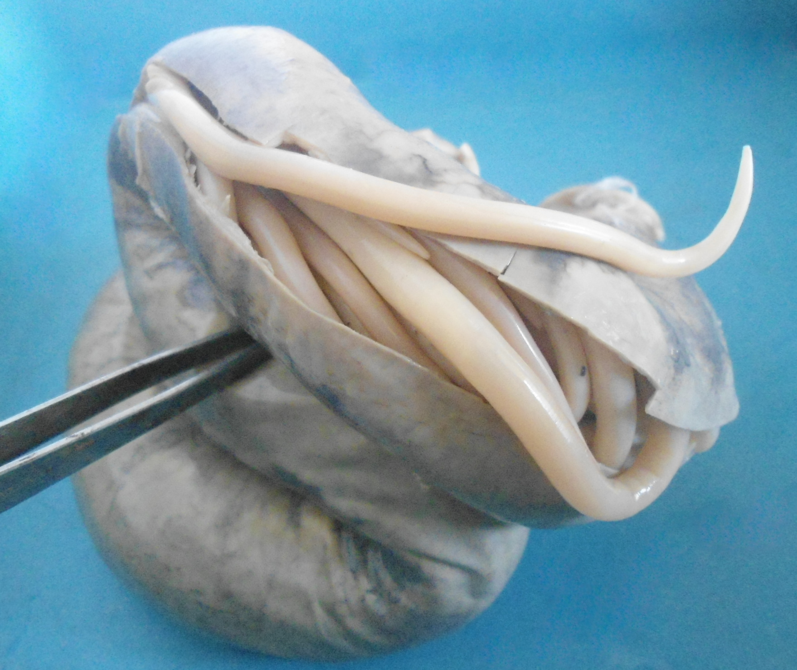

Top 10 Deadliest Animals
2,500 deaths per year
The deadly agent here is a parasite. That is, an animal that lives on or in another (a host) and causes it harm.
The roundworm here is the parasite, rather than just the vector, like mosquitos. Ascaris roundworms are transmitted when a person accidentally ingests their eggs, which is unfortunately usually when food or drink is contaminated by human faeces.
The worms take residence in the small intestine and use the human body to stay alive, feed and reproduce. The resulting disease is called Ascariasis, is characterised by fever, abdominal pain and swelling, and shortness of breath, and kills around 2,500 people every year.
